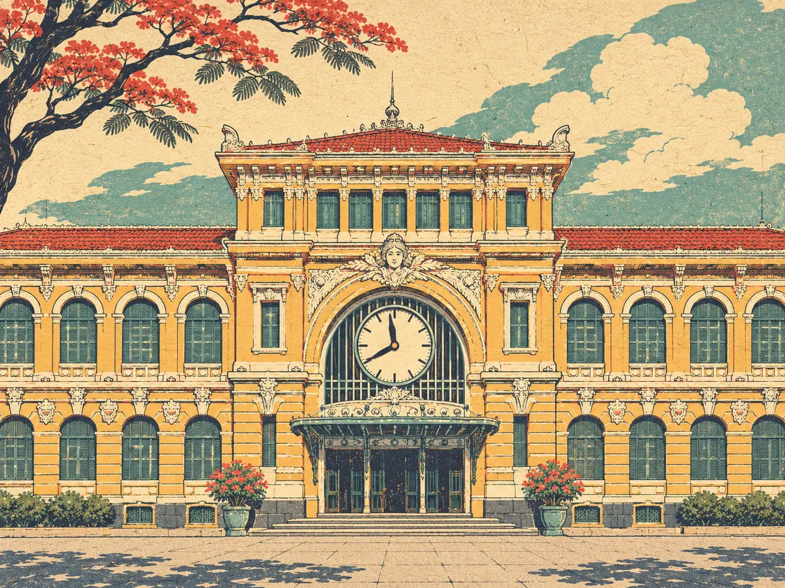
No.01Bưu điện giữa trưa
Di sản Pháp Quận 1 · 1891
Sổ ảnh cá nhân · Sài Gòn 2026
Mười hai khung hình về kiến trúc thành phố, từ bưu điện thời Pháp đến cây cầu mới bên sông. Mỗi ảnh ghi lại khu vực, giờ chụp và tiêu cự để lần sau quay lại chụp tiếp.
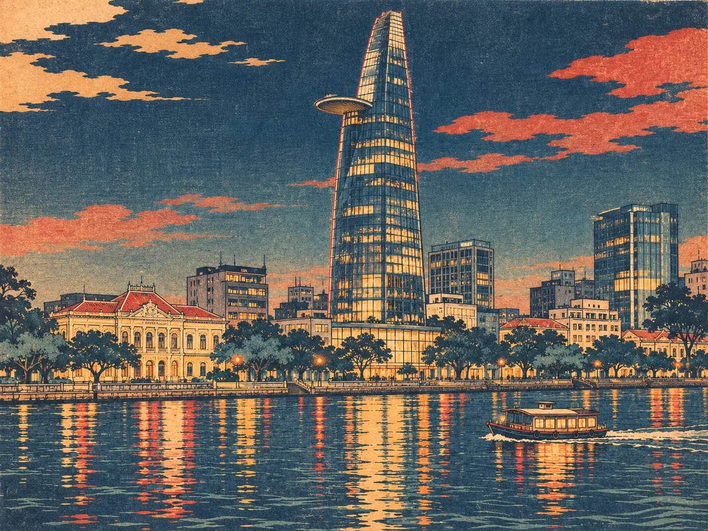
01 · Thư viện
Chọn một nhóm để lọc bằng CSS, bấm vào ảnh để mở thẻ chi tiết.

No.01Di sản Pháp Quận 1 · 1891
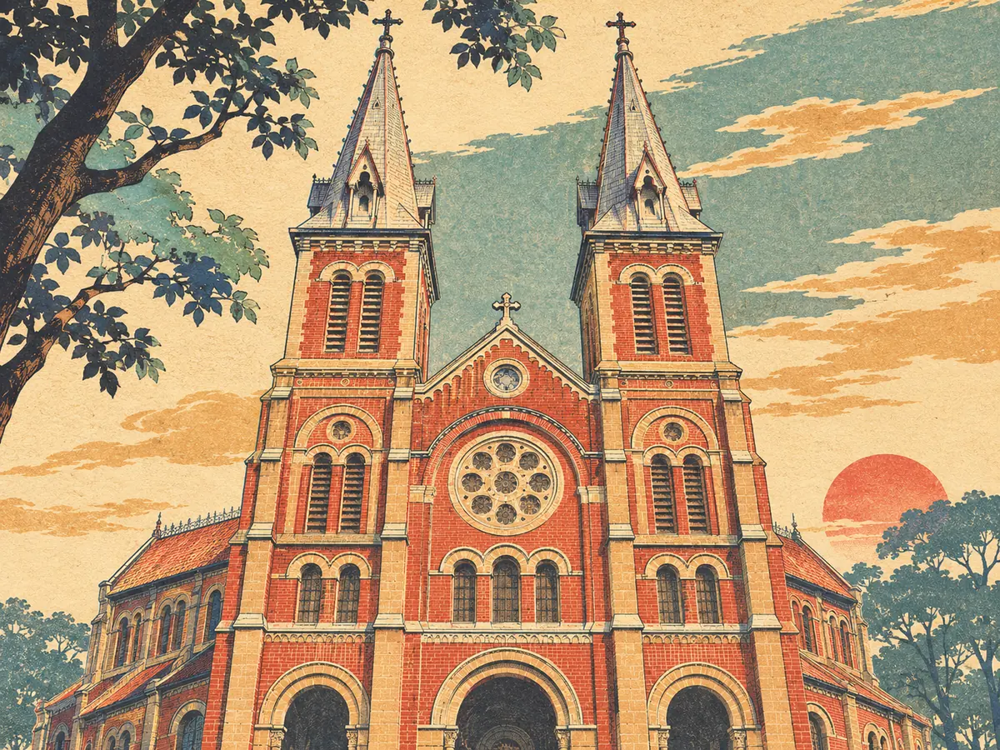
No.02Di sản Pháp Quận 1 · 1880
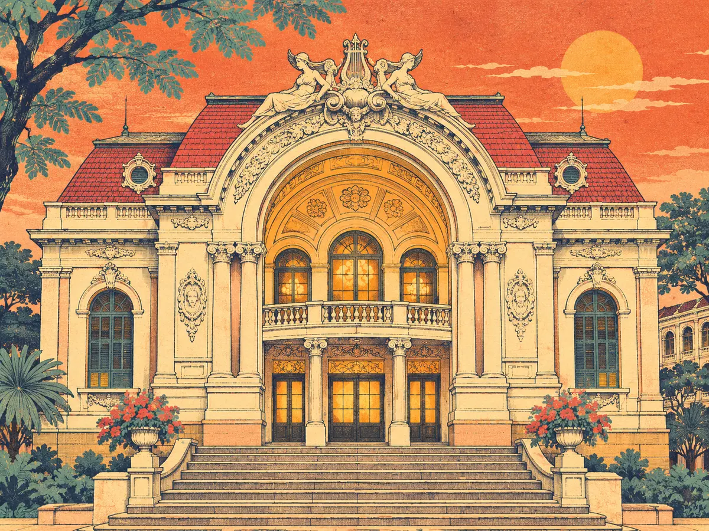
No.03Di sản Pháp Quận 1 · 1900
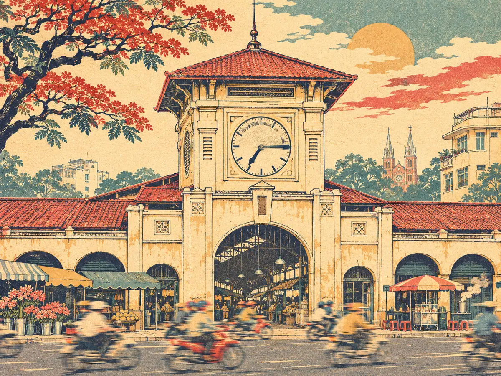
No.04Di sản Pháp Quận 1 · 1914
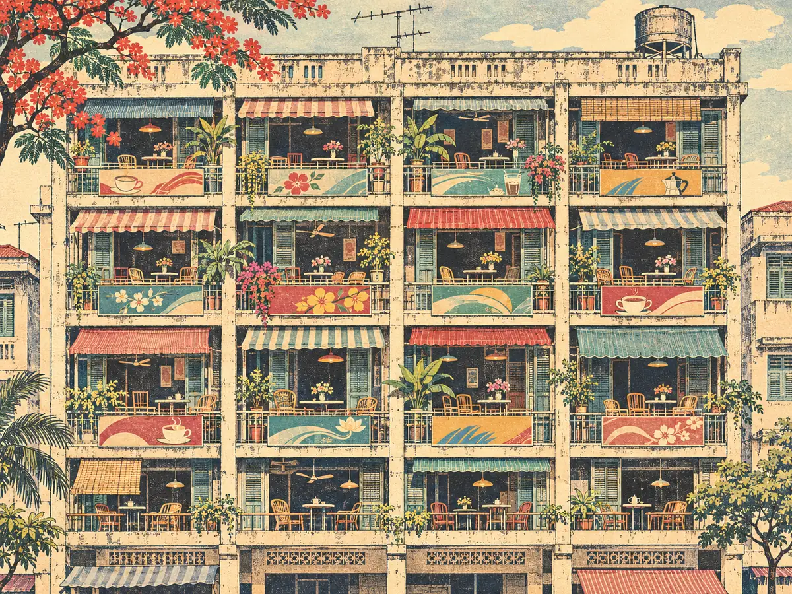
No.05Chung cư cũ Quận 1 · Thập niên 1960
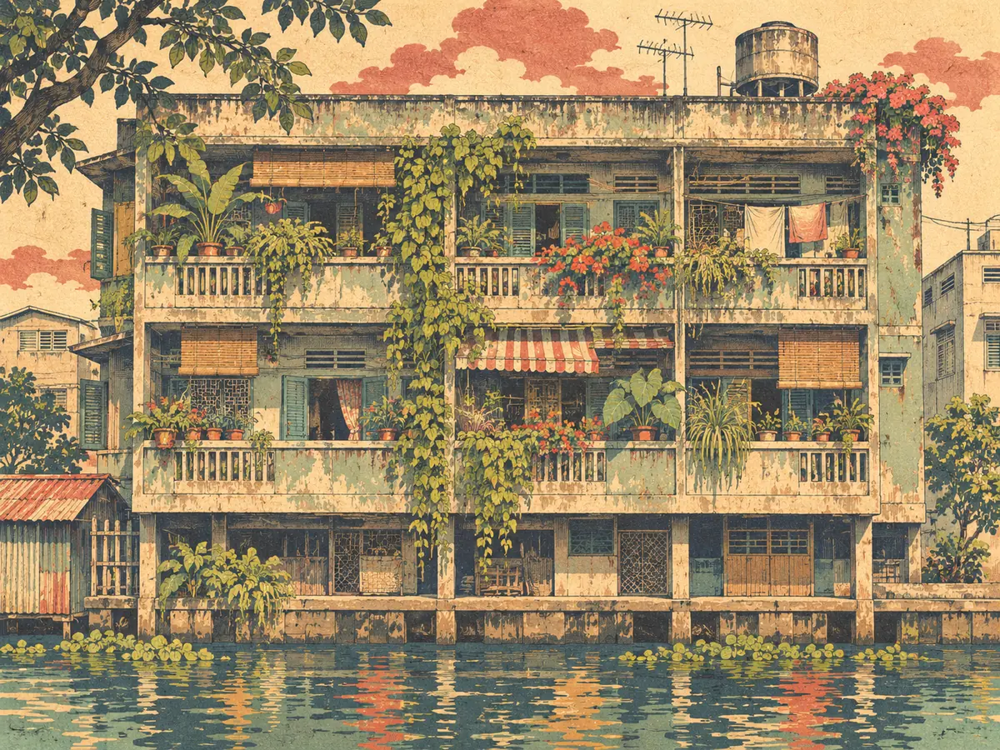
No.06Chung cư cũ Bình Thạnh · Thập niên 1970
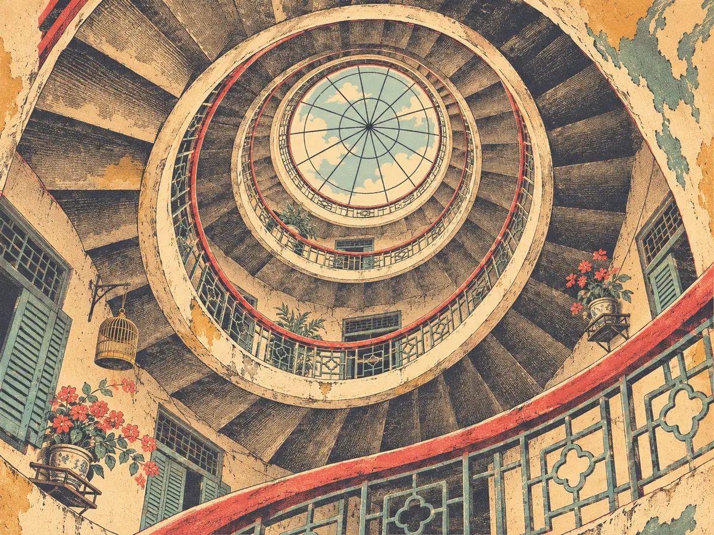
No.07Chung cư cũ Quận 5 · Thập niên 1960
Hiện đại Bình Thạnh · 2018
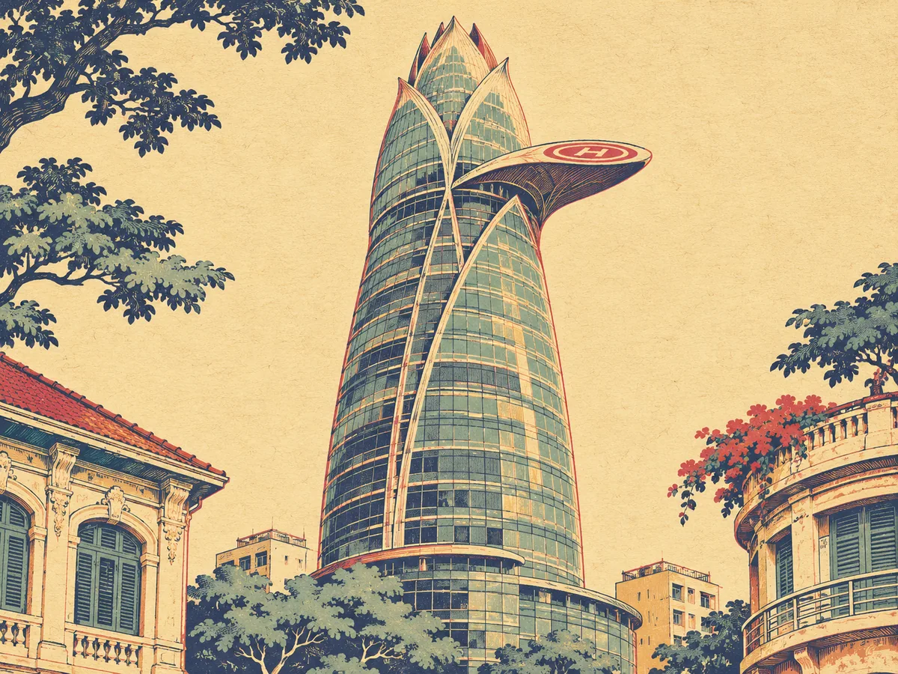
No.09Hiện đại Quận 1 · 2010
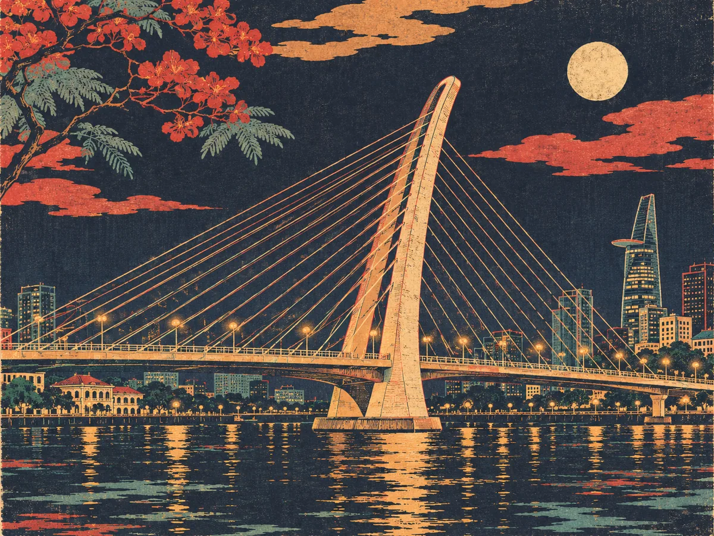
No.10Hiện đại Thủ Đức · 2022
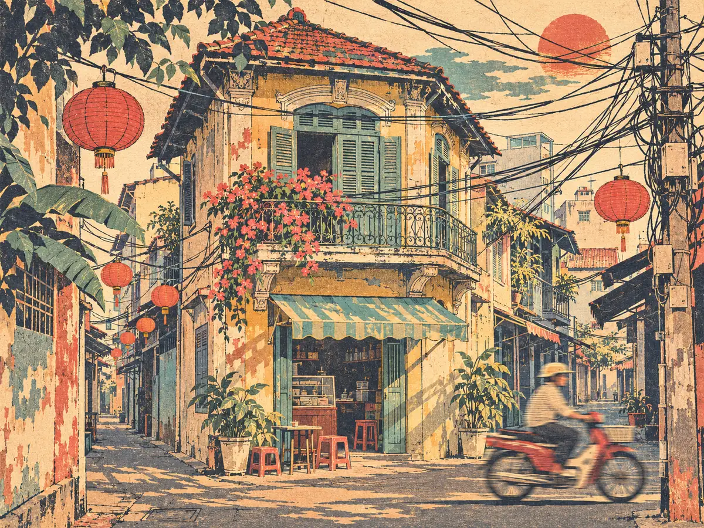
No.11Hẻm & phố Quận 3 · Đời thường
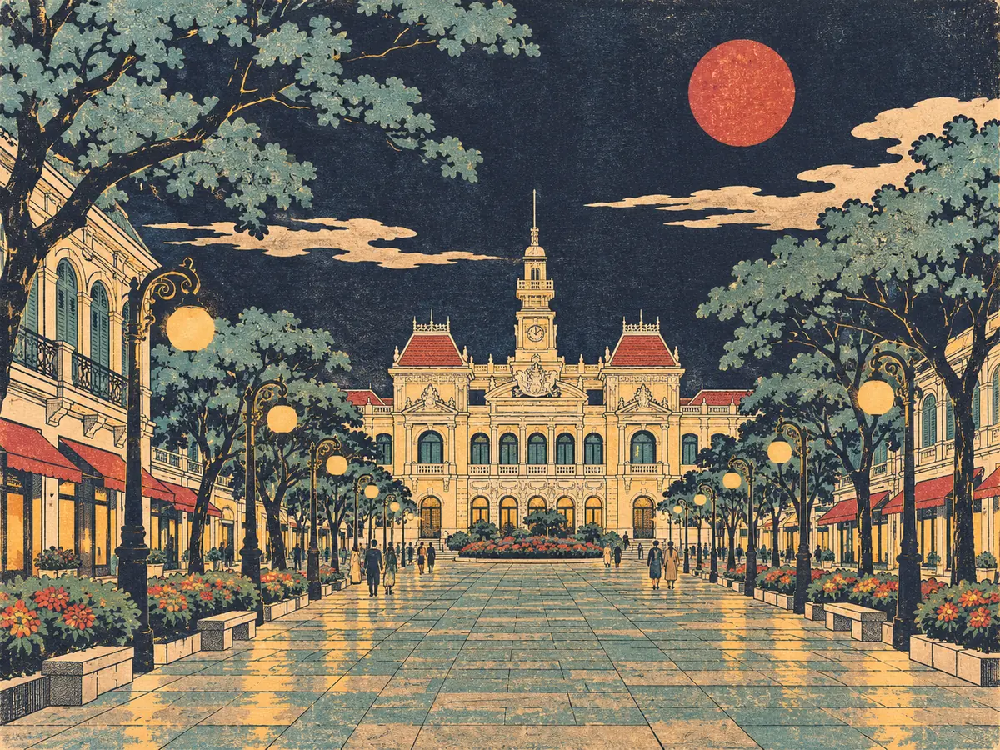
No.12Hẻm & phố Quận 1 · Đời thường
02 · Dòng thời gian
Các nhóm ảnh xếp theo thời điểm công trình ra đời.
Gạch đỏ, vòm cửa, tháp đồng hồ: dấu vết đô thị thuộc địa ở trung tâm Quận 1.
Xem khung hình No.02 →Khối bê tông nhiều tầng, ban công lặp lại, nay thành nơi ở, quán cà phê, cửa hàng.
Xem khung hình No.05 →Tháp kính cao tầng và cầu mới, đẹp nhất vào giờ xanh khi đèn vừa bật.
Xem khung hình No.10 →Nhịp sống thường ngày len giữa các công trình: hẻm nhỏ, phố đi bộ, xe máy.
Xem khung hình No.11 →03 · Gửi ảnh
Biểu mẫu chỉ kiểm tra dữ liệu và mở trang xác nhận, ảnh không được lưu vào thư viện.